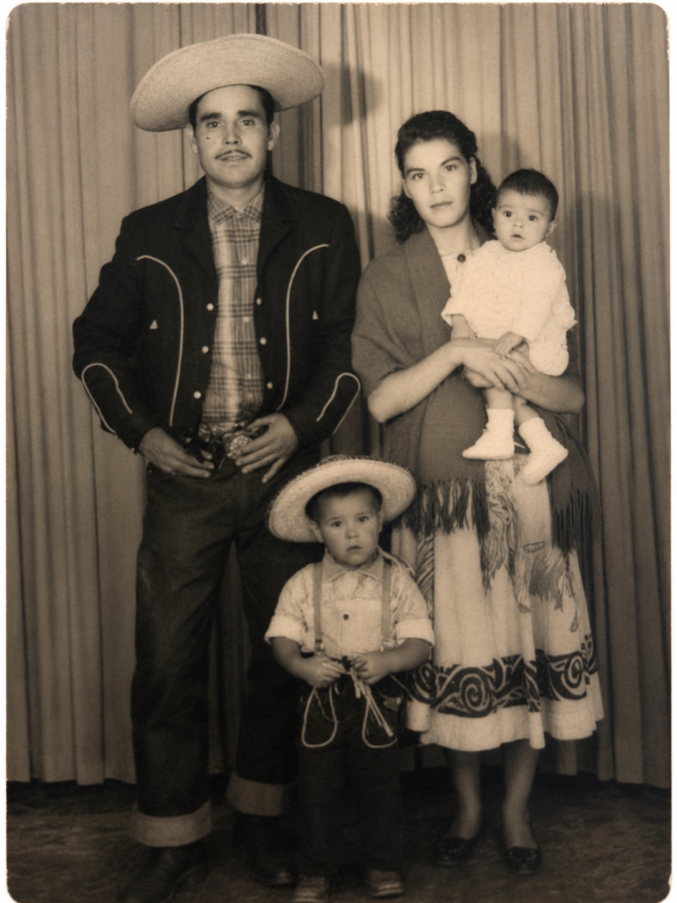

This chiles rellenos recipe was passed down from my grandmother,
pictured below with my grandfater, my pa and my tía Maria circa 1960.
I learned to make it with my mother while growing up in the
Texas Panhandle. As the oldest of five children, I rarely had
my mom all to myself, but making this dish gave us time together
in the kitchen. Those memories are what make it one of my
favorite meals, and why I want to pass it down to my own family.

El Mercado (Shopping List)
6 poblano peppers
1 pound ground beef
12 ounces cheddar cheese
2 garlic cloves
1/2 tbsp salt (follow your heart and season to taste)
1/2 tbsp black pepper, adjusted to taste
1/2 tbsp cumin, adjusted to taste
12 eggs, separated
1/4 cup flour (for sealing only)
One 16-oz block manteca (snow cap lard preferred) for frying
A Cocinar! (Let's Cook)
Roast the poblano peppers until the skin is blistered,
being careful not to over-roast them.
💡 Tip: Keep the pepper intact
Blister the skin without letting the pepper become so soft
that it tears when you peel or fill it.
Place the roasted peppers in a produce bag with a small amount of salt and water. Close the bag and allow the peppers to steam until the skins loosen.
Remove the peppers from the bag and gently scrape away the loosened skin with a spoon.
Carefully make an opening in each pepper using the spoon edge and remove the seeds without tearing the pepper. Set the cleaned peppers aside.
Season the ground beef with garlic, salt, black pepper, and cumin and cook until the beef is completely browned. Drain the cooked beef in a colander and set it aside.
Cut the cheddar cheese into small rectangular pieces that will fit inside the poblano peppers.
Set aside a small amount of flour to use for sealing the stuffed peppers.
Hold one poblano pepper in the palm of your hand and carefully fill it with the cooked ground beef and one or two pieces of cheddar cheese.
Dip your finger into the flour and lightly apply it to one side of the opening in the pepper. Press the other side against the flour to help seal the opening. Repeat with the remaining peppers and set them aside.
Separate 12 eggs, placing the egg whites into a large mixing bowl and keeping the yolks separate. Be careful not to get any shells or pieces of egg membrane in the whites.
Beat the egg whites until stiff peaks form. The egg whites should be firm enough that they remain in the bowl when it is carefully turned upside down.
❤️ Family tradition: Ojo pesado
My mother and grandmother taught me about ojo pesado,
or “heavy gaze,” the belief that someone watching too closely
could cause the egg batter to collapse. It is one of the
family traditions that came with learning this recipe.
💡 Tip: What do stiff peaks look like?
Lift the beaters out of the egg whites. The peaks should
stand upright and hold their shape instead of folding over.
Gently fold the egg yolks into the beaten egg whites without deflating the mixture.
Heat the entire block of manteca in a large skillet until it is ready for frying.
Coat each stuffed and sealed pepper completely in the egg mixture.
Carefully place each coated pepper into the hot manteca and fry until the outside is golden brown, turning as needed so that it cooks evenly.
Remove the finished chiles rellenos from the pan and allow the excess manteca to drain.
De Nuestra Mesa (From Our Table)
Chiles Rellenos is a fairly common Mexican dish, but my family has made some adjustments throughout the years. I chose this recipe primarily because it has both personal and cultural significance to me. Growing up in a family of seven, meat was not always something we could afford to have except on rare occasions, which made chiles rellenos feel like a special, luxurious meal. The combination of meat, cheese, time and skill involved in preparing this dish has made it into something that I associate with comfort, celebration and family.